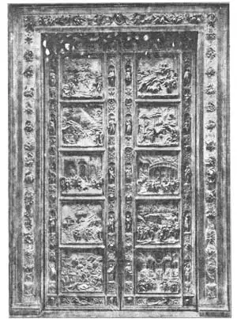
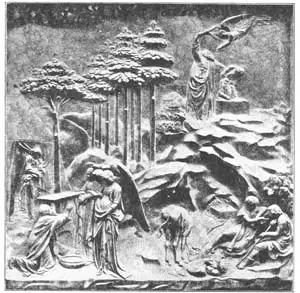

44
THE GATES OF PARADISE
天国之门

THIS story begins with a competition. Not a competition to see who could run fastest, not a competition to see who could whistle loudest, but a much harder one. It was such a hard competition that each man in it was given a year in which to try to win.
It was a competition in sculpture. It began this way: In Florence, Italy, there is a little eight-sided building called the Baptistery. A baptistery is a place where babies, or even grown-ups, are baptized. This building has four doorways in it and one of these doorways at the time of the competition had a very beautiful pair of bronze doors with reliefs on them made by the sculptor Andrea Pisano. Long after Andrea Pisano’s death the men of Florence decided there should be another pair of bronze doors for one of the other doorways.
There were several good sculptors living then and the men of Florence could not decide who was the best one to make the new doors, and so they had the competition. These were the rules:
Each sculptor had to make a relief in bronze to go on a door.
The relief had to be about Abraham and Isaac.
Each sculptor could have a year for the work and then a group of thirty-four judges would decide the winner and the winner would make the doors.
All the sculptors set to work. All, except one, very carefully kept every one else from seeing their work until the year was up. This one was named Lorenzo Ghiberti (Geebear’tee), and he worked and worked and then he asked his friends to come in and tell him how he could make his relief better. Then he worked some more until he had a very beautiful relief indeed.
When the year was up each sculptor brought his relief to the judges. And what do you think? The judges couldn’t decide which was the very best! There was a tie for first place. One of the winners was Ghiberti’s relief. The other was cast by the famous architect Brunelleschi (Brew-nel-less’kee). But Brunelleschi himself thought Ghiberti’s relief was better than his own and so he very generously said he would withdraw and let Ghiberti be the winner. Then the judges said Ghiberti could make the doors.
Ghiberti set to work. He worked and worked. One year, two years, five years, ten years , and still he worked on the doors. You’ll hardly believe how long it took to make them. I’ll tell you the date when he began and when he finished. He started to work on the reliefs in 1403. He finished the doors in 1424.
“What!” you say, “twenty-one years to make one pair of doors? That is a long time!”

No.44-1 THE GATES OF PARADISE（《天国之门》）
GHIBERTI（吉贝尔蒂 制）
Finally the doors were finished and put in the Baptistery. They opened down the middle and had twenty-eight panels or scenes in relief, chiefly from the life of Christ. Each scene was made separately and then all fitted together.
Ghiberti’s doors “made a big hit.” Every one liked them so much that the men of Florence asked the sculptor if he wouldn’t make another pair of bronze doors for another doorway to the Baptistery. There was no need for a competition this time. They knew Ghiberti was the man for the job.
Ghiberti started on the new doors. He worked and worked and worked. One year, two years, five years, ten years, twenty years , and still he worked on the doors. He began on these doors in 1425. He finished them in 1452. What! Twenty-seven years to make one set of doors? That is a long time!
But this time, when he had finished, the doors were so splendid that many people said they were perfect. A famous sculptor saw them and said, “They are fit to be the gates of Paradise,” and that is what they have been called ever since—the Gates of Paradise.
The Gates of Paradise have ten scenes from the Old Testament. Here is a “close-up” of the fourth scene showing the story of Abraham

No.44-2 PANEL FROM THE GATES OF PARADISE（镶板浮雕，取自《天国之门》）
GHIBERTI（吉贝尔蒂 制）
【中文阅读】
这个故事是以一场比赛开始的。这场比赛不是看谁跑得最快或者看谁口哨吹的最响。这是一场更为艰巨的比赛，每位参赛者都有一年的准备时间来赢得比赛。
这是一场雕刻比赛。故事是这样开始的：在意大利佛罗伦萨有一座八边形的小型建筑，叫“洗礼堂”，就是婴儿或成人受洗之处。它有四个入口处，其中一个人口处有两扇精美的青铜门，门上刻着雕刻家安德里亚·皮萨诺的浮雕。安德里亚·皮萨诺 去世后很久，佛罗伦萨人才决定为另外一个入口安装一对青铜门。
那时候，有好几个很棒的雕刻家住在佛罗伦萨，人们很难决定谁是制作新门的最佳人选。他们只好发起了一场比赛。规则如下：
每位参赛者必须雕刻一座青铜浮雕，与门相配。
浮雕内容必须是关于亚伯拉罕和以撒的。
每位参赛者都有一年时间来完成作品，然后经一个由三十四人组成的裁判团来决定获胜者。最后由获胜者制作新门。
雕刻家们便着手工作。所有的参赛者都非常小心，不让别人看到他们的作品，直到一年期限结束时才作公示，但有个人例外。此人叫洛伦佐·吉贝尔蒂。他不停地工作，还请朋友们过来提意见，然后再加强修改，直到完善。
一年期限到了，雕刻家们将作品都呈交到裁判面前。你猜结果怎样？裁判很难评出最佳作品。有两件作品并列第一。其中一件是吉贝尔蒂的作品，另一件是著名建筑师布鲁内列斯基的作品。不过，布鲁内列斯基很清楚自己的浮雕作品比不上吉贝尔蒂的，所以就很大气地主动退出，这就让吉贝尔蒂成了最后的赢家。裁判团宣告那门就由吉贝尔蒂来建造。
吉贝尔蒂开始工作了。他工作啊工作，一年、两年、五年、十年过去了，他还在工作。真难想象他到底花了多长时间。我们来看看他是哪天开始哪天结束的。他1403年开始雕刻浮雕，直到1424年造完两扇门。
“什么？”你惊讶地说：“做两扇门要花二十一年？时间太长了！”
门终于做好了，并在洗礼堂安上。这两扇门从中间打开，门上有二十八块镶板或场景浮雕，主要讲述耶稣的生平故事。每件浮雕按场景单独雕刻，然后再组合镶嵌。
吉贝尔蒂制作的门“引起了极大的轰动”。因为佛罗伦萨人都喜欢这门，于是就请吉贝尔蒂再为洗礼堂的另一个入口做一对青铜门。这一次就不需要比赛了。人们已经知道吉贝尔蒂是这份工作独一无二的人选。
吉贝尔蒂开始了新门的制作。他工作，工作，再工作。一年、两年、五年、十年，都二十年了，他还在做门。他1425年着手制作，到1452年完成。啊！花了二十七年？真是漫长岁月啊！
这时，他终于完工了。这门制作精美，很多人都说简直无可挑剔。后来，有个著名雕刻家评论说：“这门堪称天国的大门。”从此，人们称它为“天国之门”了。
天国之门上雕刻了十个取自旧约故事的场景。图44-2是第四场景的浮雕特写图，讲的是亚伯拉罕的故事。